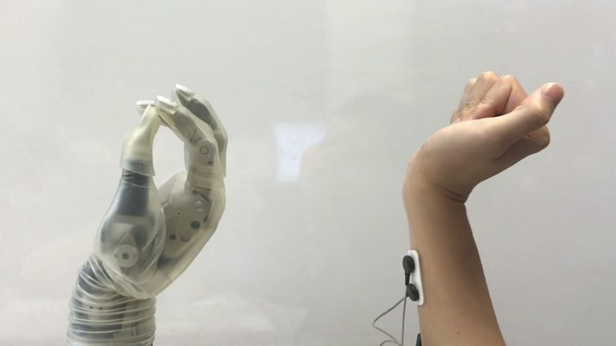
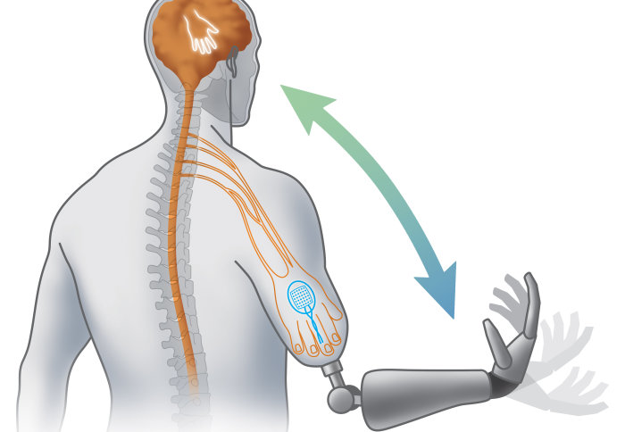

“The use of artificial organs is likely to increase in the future, given technological advances, increases in chronic diseases, and limited donor organs” (Walker 2021), so there is no telling what new doors could artificial body parts lead to.
 For people who receive artificial limbs to replace the certain type of limb on the area affected, sometimes they can feel embarrassed about the bionic look of the limb due to it not looking like the "norm", though this may not affect everyone there has been efforts of trying to give bionic limbs a more natural appearance, and if this doesn’t apply to a individual they can always do their own customization that gives their arm a more unique look and feel.
 Obviously one of the main purposes of the bionic limbs is to make the prosthetic more responsive to the user’s commands. Prosthetics have been shown to be able to move, however not with the full range of motion like an actual limb. Over the years engineers have been working hard to create a system that is more responsive, has the full range of motion like an actual limb and to make it more functional. One of the main methods of creating a more responsive prosthetic has been linking the artificial limb to the user's mind. This allows the limb to receive commands from the central nervous system with quicker response times with less lag. This allows the limb to recreate normal movement and functionality, and instantly triggers the desired movement, creating a more fluid and natural feel for the user when using the limb.
As of right now artificial limbs are not available to people who are in need of prostheses, however we can expect there to be mass reproduction of artificial body parts. With the advancement of technology we can expect that mass reproduction will make the development cheaper to make, and will become readily available for people that need these artificial body parts. “I think we are just getting started… There is just a tremendous amount of potential ahead of us, and we've just started down this road. And I think the next five to 10 years are going to bring phenomenal advancement.” (Michael McLoughlin, 2014). Another benefit of mass reproducing this technology is that the demand for transplant organs and limbs will be met, this will allow for shorter waiting times for people who need transplant organs, this will cause less stress for the patient and for their family.
Elderly people face many challenges when it comes to their motor skills, cognitive abilities and their senses. Due to their old age their motor skills can deteriorate making everyday tasks challenging for them, while their cognitive abilities get worse due to illnesses like alzeihmers that affects their memory, and even their senses worsen like their vision or hearing due to the deterioration of their retina or cochlea. The technology to help the elderely is already out there and still being improved on. Though there may still not be an artificial brain that can be implanted, there is promising work of a “pacemaker” type device for the brain; it has shown that it can enhance the memory in some epilepsy patients(Baeker 2019), this device can also help in patients with alzeihmers, due to the illness causing memory loss, confusion, the inability to learn new things and a lot of other symptoms that doesn’t allow for the patient to be able to process things properly, this artificial brain can help in lessening the effects of these symptoms or even negate the effects entirely. Not only is there an artificial brain being developed, there is the artificial retina. The artificial retina can be used for people who have lost their vision or for people who are losing their vision, this can help a lot of people who are starting to develop visual impairments.